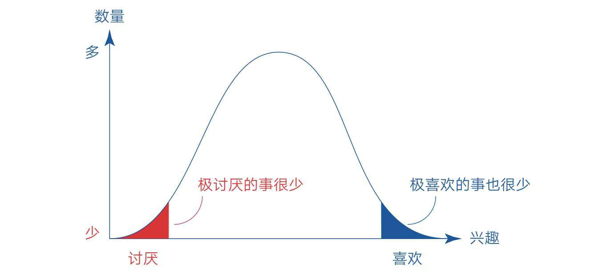
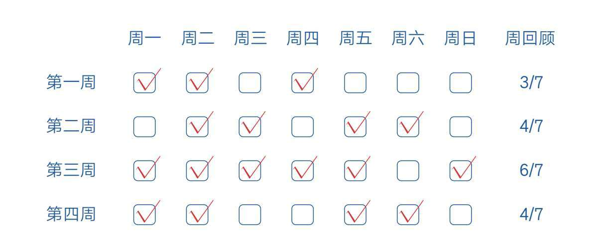

女儿上小学一年级的时候，我常去接她放学。
那天是周五，我和往常一样在学校门口等她。她出来的时候非常兴奋，像风一样扑到了我的身上，咧着笑开了花的小嘴说：“爸爸，你知道吗？刚才下课的时候我以为是课间休息，没想到是放学！哈哈哈……”
她开心得就像捡了个大元宝。因为刚上小学不久，她显然忘了周五下午只上两节课这件事，所以心里还和平时一样装着四节课。我对她的反应也不意外，因为我知道这背后是怎么回事——当她用四节课的“心理容量”去装两节课时，当然会收获意外的惊喜。
“心理容量”这个词是我自己发明的，但它源于《专念创造力：学学艺术家的减法创意》一书的作者埃伦·兰格的一个心理实验。
假设你要做50个原地高抬腿，什么时候你会开始感觉到疲劳？绝大多数人会在做到30个左右的时候开始感觉疲劳。但是当被问到，如果要做70个，什么时候开始感觉到疲劳时，同样还是这些人，他们却会说在做到50个左右的时候。在第一种情况下，30个左右就觉得累了，而在第二种情况下，50个左右才感到累。研究者认为产生这种差别的原因在于，无论我们做什么，通常预期在完成2/3的时候会感到疲劳。
这也是为什么在100米跑步测试的时候，体育老师会让你把终点放到110米的地方，这样你就能以最快的速度冲过百米线，否则你会不自觉地在90米处开始减速。
我自己也会运用这个心理技巧来积极应对生活中的烦恼。比如我以前特别不喜欢做家务，很讨厌拖地、洗碗之类的活，所以每次轮到我做的时候心里就会特别抗拒，经常拖延逃避，感觉很痛苦。
后来，我意识到“心理容量”就像一个桶，如果桶里只装那些默认的选项，比如自己喜欢做的事情，那么把任何预期之外的任务加进来，自己都会天然地抗拒。但如果我们一开始就把那些不喜欢做但又必须做的事情放到桶里，就不会觉得它们是额外的负担。
可见，桶的容量其实是可以主动调节的。从那以后，无论做家务还是工作，我都会主动审视自己的心理容量是否足够大，把那些自己感到为难的事情提前纳入自己的预期，这样就可以轻松走出舒适区而不觉得难受。时间一长，自己不仅事情做得更好了，在别人眼中也成了更积极和更有耐心的人。
学习也是如此。
如果你在面对学习任务时有畏难情绪或拖延倾向，通常是因为你的心理容量太小了。你总是希望少做点作业，或只做自己喜欢的事情，所以每次写完家庭作业，你就会特别抗拒父母额外布置的数学练习和钢琴任务。相反，如果你一开始就把这些可能出现的任务提前纳入自己当天的作业计划，你面对它们时的心态就会积极很多。
准备多做一些，一旦任务减轻就会惊喜；试图少做一点，一旦任务增加就会痛苦。我们的学习状态很大程度上取决于自己的心态。哪怕你现在已经有了畏惧和痛苦的情绪，但只要立即审视并扩大心理容量，你的学习状态就会发生立竿见影的变化。
如果我们在面对困难时能主动降低心理期待，自己的行动就可以变得更加积极。
稍微观察一下就会发现，我们生活中的多数烦恼都来自对自己和他人的过高期待。不信的话，你可以觉察一下自己的焦虑情绪，其原因无非就是自己当下的期待超出了实际能力。而且这些原因都可以被归结为“数量”和“难度”两种类型。
就“数量”而言，很多人是同时想要很多，才导致自己心神不安，无法专注地工作或学习。比如很多读者的烦恼是这样的。
最近积压了很多任务，感到时间不够用，心里越想高质量地完成所有的任务就越完不成，对此很焦虑，该怎么办呢？
既想一次性完成论文答辩，又想提前找工作，结果哪头都无法投入，很纠结……
凡遇到这类情况，我都会建议他们主动降低期待，放弃或暂时搁置那些不重要、不紧急的任务。因为很多任务其实都是我们的欲望强加给自己的，就算暂时放弃，天也不会塌下来。相反，当我们主动放下那份不切实际的期待后，反而可以安静下来，专注于眼前最重要的事情。
当然，你可能会说有些事情是自己没办法选的，比如考试压力，我们总不能放任不管吧？事实上，如果我们对某一次考试真的心有余而力不足，那还不如降低期待，告诉自己最差的结果无非就是没考好，然后本着重新开始，能学多少就学多少的心态，把多出来的都当成惊喜，这样我们反而不再担忧害怕，能静下心学习。类似地，当我们遇到畏惧的人和事时，不妨假设自己最担心的事情已经发生了，此时心理预期在低谷，我们反而能放平心态，从容面对。
主动削减欲望、降低期待的目的在于让自己丢掉精神包袱、轻装上阵，毕竟焦虑只会让我们停滞不前。
另外，就“难度”而言，很多人经常失败，是因为他们忍受不了最初阶段的笨拙和失败。比如读者“江风”说：“冥想好难啊，我每次都分心走神，感觉自己好没用。”我问他练习多久了？他说：“7天。”读者“Yang”说：“早起好不适应啊，感觉每天上午都会犯困。”我问他早起多久了，他说：“4天。”我听后的第一反应就是：“这才几天啊，做不好当然很正常！”
不过，我也没有资格去批评他们，因为急于求成是人的天性，我自己也经常陷入这种境地。比如前段时间为了陪女儿玩三阶魔方，我们一起学习了“基本公式”——用这种方法可以在2分钟左右复原魔方。后来我看到魔方达人用“高级公式”在30秒内将魔方复原，觉得很酷，于是付费购买了视频教程开始自学三阶魔方的高级公式。
高级公式共有119条，其中相对简单的F2L公式就有41条，虽然它们之间存在规律，老师讲得也很好，但对我这个新手来说还是很抽象，我经常记混。学到第三四天的时候，我发现自己的速度非但没有提上去，反而更慢了。复原过程中不是反应不过来就是弄错，手指也非常笨拙，还不如用基本公式来得快。当时我非常懊恼，甚至开始自我否定，觉得这41种情况简直太复杂了，自己根本记不住。
就在我准备放弃的时候，我想起技能学习的本质就是通过大量的练习使大脑中相关神经元产生连接并形成强关联的过程。这个过程在初期进展必然是非常缓慢的，因为神经元之间还没有形成顺畅的通路。但只要我们持续练习，这些连接就会越来越多、越来越强，最终形成一张高效的网络，使自己在某天开始加速并突破。所以，我坚信只要给自己足够的时间去练习，就一定会对41种场景形成肌肉记忆，达到不用动脑也能自动上手的程度。
从那以后，我开始降低期待，决定用至少1个月的时间去学习F2L公式，且每次只要求自己学会一条，再用3～6个月去练习。如果想不起来就反复看视频讲解，直到把它们牢牢记住，然后一有空就把魔方拿出来练习（正好可以打发很多碎片时间）。
事实上，20天后我就能快速识别大多数场景，手指的灵活度也提升了很多。现在，我已经掌握全部119条公式了，对手中的三阶魔方已经有了掌控感和浓厚的兴趣，再也没有之前的挫败感了。
这段经历也让我对今后学习掌握其他技能有了巨大的信心和指引，因为只要我在遇到困难时能主动降低期待，允许自己一次只做好一件事，允许自己在开始的时候进步缓慢，甚至反复失败，允许自己花更长的时间去练习，就一定能学成或做成这件事情。
需要说明的是，降低期待并不是降低标准，而是为了减轻心理包袱，让自己更好地投入重要的任务。如果你认为降低期待就是自我放弃，那你的理解就有偏差了。
事实上，无论扩大心理容量还是降低心理预期，它们都是事物的一体两面。虽然它们看起来像一对矛盾，实际上是向着同一个目标去的。换句话说，我们在标准上要想得高一点，在期待上要想得低一点。
美国作家菲茨杰拉德说过：检验一流智力的标准，就是看你能不能在头脑中同时保留两种相反的想法，还能维持正常行事的能力。我认为检验一流心理的标准也是如此——看一个人能不能在心中同时容纳两种相反的期待，还能正常行事。
当我们能够同时容纳两种相反的想法和期待时，必定能保持开放的心态，并表现出这样的品质：凡事都能做最好的准备，同时也会做最坏的打算。
本节要点
1.一开始就把那些不喜欢做但又必须要做的事情放到心理桶里，我们就不会觉得它们是额外的负担。
2.高期待是痛苦的根源，应学会把心理预期主动降到谷底，这样，我们反而能欢快前行，因为任何一点小收获都会让自己受到激励。
3.做一个开放的人：凡事做最好的准备，同时做最坏的打算。
如果仔细观察上一节提到的心理技巧，你会发现无论扩大心理容量，还是降低心理期待，它们本质上都在做同一件事：转变看待事物的视角。这也是积极心理学的神奇之处，即我们面对的事情还是那个事情，但我们的看法变了，然后一切就都变了。
这看起来就像一种魔法——只要我们心念一转，事情就会向着更好的方向转变。既然如此，我们为什么不把这个心理技巧运用得更彻底些呢？
这绝对是个好主意，但要想做到这一点，我们最好想办法先看到更多角度。毕竟角度多了，我们才有机会选出更好的视角。
1934年，时任美国总统的罗斯福家中失窃。一位朋友闻讯，忙写信安慰他，劝他不要太在意。他回信说：“亲爱的朋友，谢谢你来安慰我，我现在很平安，感谢生活。因为，第一，贼偷去的是我的东西，而没伤害我的生命；第二，贼只偷去我的部分东西，而不是全部；第三，最值得庆幸的是，做贼的是他，而不是我。”
罗斯福先生就是一位多角度看问题的高手。他在损失了巨额财物之后，竟能找到三个非常积极的视角，让自己尽快从悲伤的情绪中走出来。可见，当悲剧已经发生且无法改变时，人们看待事物的态度变得至关重要。
如果你觉得罗斯福先生的经历离自己太远，那就来看看另一个发生在身边的故事。
2020年新冠疫情突发，同学们开始在家学习，其中读者“点点”给我发来了自己的困扰，他说：“我家楼上的脚步声比较大，而且她家里有小孩，拉椅子的声音也非常响。和她交流也没有效果。有时候我甚至认为她家的拉椅子声是故意的……每次一听到这些声音，我就感觉很无力，不想继续学习，请问你对我的问题有什么好的建议吗？”
正好那几天我在读《思维的囚徒》，作者亚历克斯·佩塔克斯提出的“十大积极结果练习”十分应景。于是我对他说：“如果你希望有所改变，那就试着写下楼上脚步声的10个好处吧。”之后，他便没了声音。我知道他心里大概在想：“从烦人的脚步声里找好处？还要找出10个，这怎么可能！”于是我给他做了个示范，我说：“你可以把椅子声和脚步声解读为‘这家的孩子真活泼呀’，或者‘还好疫情得到了控制，不然整个世界会安静得一点声音都没有，那就太可怕了，所以能听到人的脚步声真好’……”两天后，他给我回了消息：“谢谢你给我提供了另一个视角，但是我的想象力不够丰富，只能想出两点，另外，你给的那两个视角很好。”
不用告诉你结局，你也能猜到“点点”的情况发生了积极的变化，尽管现实环境并没有任何改变。不过，我想总有人在听完这两个故事后脑海里会闪过“自欺欺人”之类的念头。其实，这种看似可笑的做法极其符合“态度—行为—结果”的事物发展规律。
很明显，我们看待一件事情的态度会影响我们的行为，而我们的行为则会影响现实结果。在上述案例中，如果读者“点点”不改变态度，他就会一直处于烦躁和抱怨之中，可能使自己的成绩在痛苦中持续下滑；而他现在可以笑对噪声，聚焦学习，甚至还能刻意锻炼自己抗干扰的能力。所以，在遭遇困难的时候，一定要提醒自己保持冷静，要在这种时候审视自己的态度和选择，要想方设法找到积极的一面。
卡尔·纽波特在《深度工作》一书中也表达过类似的观点：“你的世界是你所关注事物的产物。”“我们的大脑是依据我们关注的事物来构建世界观的。”我们选择去关注哪些事物、忽略哪些事物，会对我们的生活质量起到关键的作用。这也是我们在任何困难面前都要保持乐观的原因，只有态度和信念改变了，事情才会朝好的方向转变。
好消息是，无论你当前处于何种情绪旋涡，只要自己愿意，总能找到更好的角度。毕竟任何事物都是多维的、立体的。看似悲观的事物背后肯定有乐观的一面，严肃事物的背后必然有好玩的一面。只是有的人面对再好的事情时都只盯着一点瑕疵不放，而有的人却能从任何一件糟糕的事情中找到闪光点，并将其放大，忽视其他不足之处。比如：
·同样是半杯水，有的人哀叹“只有半杯了”，而有的人惊喜于“竟然还有半杯”；
·同样是挫折，有的人沉浸在悲伤中无法自拔，有的人则认为挫折是上天给自己成长的提示；
·同样是学习，有的人认为自己是在为爸妈学，所以能偷懒就偷懒，而有的人认为爸妈为自己创造了这么好的学习条件，没有理由不珍惜。
更好的消息是，无论我们遇到什么困境，最终我们都是有选择权的。正如《活出生命的意义》的作者维克多·弗兰克尔所说：“人所拥有的任何东西都可以被剥夺，唯独人性最后的自由，也就是在任何境遇中选择一己态度和生活方式的自由不能被剥夺。”所以，困境就是我们成长、改变的分水岭，而成长、改变也是我们和困境争夺选择权的较量：放弃选择，我们就会成为困境的囚徒；坚守选择，困难也会向我们俯首称臣。
如果说转变视角是一种魔法，那早在上大学那会儿，我就在无意间开始使用它了。
记得当时学校有个要求，想要顺利毕业，每个人必须通过1500米跑步的体能考核，而且成绩要在5分10秒以内。教官为了激励大家训练，当众立了一个规矩：每次体能课开始前先测试跑一次1500米，凡是成绩达到优秀的，都可以免上后面2小时的体能课。而我在很长一段时间内都是唯一可以在全队近百人的目送中欣然离场的那个人。
跑步并不是我的强项。刚入学的时候，我的1500米大概要用8分钟。在向5分10秒这个目标进发的过程中，所有人都备感煎熬，每次都是“跑前很紧张、跑时很痛苦、跑后很无奈”。
就在我快感到绝望的时候，转机出现了。一天下午，课前测试照常进行。教官的哨声一响，我便以冲刺的速度第一个蹿了出去。对于这样的中长跑测试，一开始就冲在前面可不是什么好策略，因为剧烈的体能消耗会让自己很快失去后劲。但就在我快要松下那口气准备减速的时候，目光也从远处落到了前面10米左右的地方。我突然在心里对自己说：“先别减速，等跑到前面10米那个地方再减速也不迟。”等我跑到那个点后，我的目光又落到了前面的10米处，我觉得这样的距离很短，还可以继续来一次，等跑到那个点后，我又把眼光投向下一个10米处……
几次重复之后，我竟然发现自己并没有上气不接下气的感觉，身体反而轻松了起来。因为自己就像在玩一个追逐游戏，注意力已经从沉重、遥远的剩余圈数转移到了一段段10米的距离上，抬腿摆臂变得越来越轻快，不知不觉中我竟领先第二名小半圈。明显的优势让我不再关注成绩，注意力几乎完全集中在抬腿摆臂的畅快感上。我越跑越快。当教官宣布成绩并告诉我不用上后续的体能课的时候，我简直不敢相信。
在往后的日子里，我一次次如法炮制——冲到最前面，然后开始一个人的追逐游戏。我之所以喜欢一开始就冲在前面，是因为边上没有其他人干扰，我就能专注地沉浸在这个游戏中。一个痛苦的考核项目，最后成了我每次都跃跃欲试的期待项目，而且没人知道我是怎么突然变强的。即使后来偶尔有几个人也在课前测试中达到优秀，但他们冲过终点线后苦不堪言，全然不像我做游戏般轻松。
这个心法为我的大学生活增色不少。因为这件事，我当时还在记事本里写过一句感悟：不要让事情本身束缚了你的情绪和注意力。这可是我大学时代为数不多的能一直记到现在的人生经验。现在再回头看，自己也很震惊，因为这完全不是什么土方法，而是实实在在的积极心理学呀！
积极心理会让我们在看似不可能的情况下看到新的视角和选择，就像前文提到的1500米跑步测试，在大多数人眼里，它就是一项考核任务，没得选择，只能被动承受，但在我眼里，它成了一件好玩的事——游戏。事实上，任务还是那个任务，只是我看待它的视角完全不同了。
放眼现实生活，我们总是要面对很多“不想做但必须做”的事情。比如1500米跑步考核、堆积如山的作业、不得不洗的衣服、不得不见的人……面对这些事情，我们会不自觉地感到沮丧、抗拒和排斥，因为这些都不是我们自己主动做出的选择，而是外界给的压力。
一个人如果整天做自己不想做但又必须做的事情，日子就会变得灰暗无趣。然而面对压力，我们真的就只能承受吗？未必。或许我们的情绪和注意力只是被事情本身给束缚了，因为困难和压力总能把人的情绪和注意力抓得死死的，让你很难看到其他角度。
所以，当你遇到那些“不想做但必须做”的事情时，只要在心里默念一句“咒语”，就可以让自己跳出事情本身。这句“咒语”便是“我并不是在做这件事，我只是在做另外一件事”。
把这句话套用到其他场景中是这样的：
·我并不是在做跑步测试，我只是在玩追逐游戏；
·我并不是在写作业，我只是在挑战自己的速度；
·我并不是在洗衣服，我只是在活动自己的手脚。
这些理由听起来可能有些可笑，但不要低估这种假设的力量，一旦你有了新的视角和选择，就会意识到：事情本身并不重要，我们只是在通过它获取另外一种乐趣，顺便把这件事给做了。在心理学上，这个方法叫作“动机转移”。
既然动机可以转移，那我们为什么不转得彻底些，让它变得更好玩呢？
女儿刚读一年级的时候，我就经常用这种方式引导她。比如，她当时很不喜欢写字帖，每次做这个作业都闷闷不乐。我见她愁眉苦脸，就跟她说：“你不是喜欢画画吗，为什么你不把它当成画画呢？写字和画画不都是笔在纸上动吗？”她听后眼前一亮：“对呀，爸爸，我把它当成画画不就行了！”没过多久，她就开心地把那个字帖“画”完了。
也请你开动脑筋，想想自己的学习。即使你现在处于畏惧、抗拒或逃避的状态，你也能从中找到一个更好的角度，甚至把学习当成好玩的游戏。
最后，让我们来思考一个问题：为什么我们天生容易视角单一，只看事情的负面角度？
因为人有负面偏好。
所谓负面偏好，简单地说就是我们对坏事的反应要强于对好事的反应。
不要被“负面偏好”这个专业术语吓到，它其实很容易理解。因为本能脑的首要职责是保障生命安全，所以它对危险会特别警惕和敏感。毕竟，如果我们对危险不够警觉，就很容易一命呜呼。与之相比，因太过警觉而错失几次机会不会付出太大的代价。所以，负面偏好是写在我们基因深处的又一大天性，它会在各种场景下影响我们的状态和行为。
比如你带着一张成绩单回家，上面写着“一科优秀、两科良好、一科不及格”，你的父母极有可能短暂地瞥一眼“优秀”和“良好”之后，把注意力放到“不及格”上。他们会追问原因、叹气失望，甚至动怒责怪，使空气中充满紧张的味道。你有3/4的天气是晴朗的，但这1/4的乌云却让整个天空都显得黑压压的。
我们都体会过这些场景：一天中大部分时间都过得平安顺利，但父母的一句训斥、老师的一句责骂、同学的一个抱怨、好友的一个误会……便让全天的心情蒙上了一层阴影。事实上这些“不好的事情”充其量只占全天事情的几十分之一，但它们就能如此霸道地占据我们的注意力。还有那些过去发生的和未来可能发生的“坏事”，都会不自觉地让我们产生困扰。因为“负面偏好”会使我们更多地注意负面信息和事件，不自觉地忽略大多数正面、美好的事情。
很多同学向我表达过类似“在公共场合或他人面前不敢表达自己的观点，害怕一旦说错会被别人笑话”的烦恼，其实这就是负面偏好的自我保护功能被激活了，因为别人的眼光和评价对我们来说是安全威胁。事实上，这种担忧完全没必要。因为每个人都有负面偏好，所以大家最关注的人永远是自己。换句话说，没那么多人关注你，不要总觉得自己站在聚光灯下，自己的一言一行都在被别人观察。得到别人的关注其实是一件很难的事。很多时候，我们自己很在意，其实别人早就忘了那件事。所以，只要我们想通了这一点，就会活得更轻松。
负面偏好让我们远离危险，这原本是好事，但大多数时候它会过度反应，使我们“身处美好中，却活在烦恼里”，所以我们需要运用理智去审视这些担忧，消除那些不必要的心理束缚和包袱。
说到这儿，或许你能想到，转变视角其实就是元认知能力的一种体现。它就像一对翅膀，让我们可以飞到空中，360°观察自己和自己面对的困难，从而轻易看到更多角度，并选择一个更好的角度。
所以，我们要特别重视这种能力的培养与运用。如果我们在任何困境中都能转换视角、克制天性，主动解放自己的情绪和注意力，那么无论走到哪里，我们都能成为自由人。
本节要点
1.转变视角就像一种魔法，我们心念一转，事情会向着更好的方向转变，即使我们面对的还是原来那件事情。
2.面对困难事件，我们要学会多角度看问题；面对枯燥事件，我们要把它当成另一件事。
3.每个人都有负面偏好，所以大家最关注的人永远是自己，换句话说，没那么多人关注你。
想要独立思考，其实很简单，只要比别人多想一层就可以了。真的不用多，只要一层，你就能击中一些问题的本质。比如“兴趣”这件事就是这样的。
我们都知道“兴趣是最好的老师”，也听过很多名人因兴趣而最终成就自己的故事，甚至自己也有过这样的经历。不过，这只是我们对“兴趣”的第一层认知，因为看不到第二层含义，所以很多人不可避免地掉进了坑里。
比如一些学生因为某一科成绩不好，学得很痛苦，就认为自己对这方面不感兴趣，于是破罐破摔，把兴趣当成了放弃的借口；一些职场人一边想着做感兴趣的事情，一边又必须硬着头皮去做那些自己不感兴趣但可以赚钱的工作，结果哪一头都无法全力投入，把不感兴趣当成了平庸的借口。
我们不是在寻找兴趣就是在寻找兴趣的路上，却从来没有想过兴趣从哪里来、到哪里去。但只要我们先停下来，往深处稍微看一眼，就能发现，促使我们成功的核心其实不是“兴趣带来的喜欢”，而是“擅长带来的成就感”。
正是这一点小小的认知差别，造成了我们长久以来的误解，以致那些只谈兴趣却从来不关注成就感的人，最后失败了。
我们常把兴趣比喻成老师而不是母亲，比如我们常说“兴趣是最好的老师”，却很少说“兴趣是成功之母”，这个小小的角色差别是有道理的。因为老师只负责领我们进门，给我们初始的驱动力，我们不能靠老师来成就自己，但是可以通过自己的行动来换取成就感，推动自己继续精进、前行。
就像你看到跑步有诸多好处，对此产生了兴趣，结果没跑几天可能就再也不愿意从温暖的被窝里起来，去寒冷的室外“受虐”了，但有人就是愿意这样做，并且乐此不疲，因为持续跑步带来身心方面的长久畅快感，会让自己上瘾。一旦体验到这种成就感，什么寒冷天黑、刮风下雨，都拦不住自己换上跑鞋出去跑步。
你不愿意做某件事，很可能不是不感兴趣，而是没有体会到成就感罢了；你讨厌做某事，也可能不是你不喜欢，而是你不够擅长罢了。没有人不愿意做自己擅长的事。如果你数学成绩很好，你就会说自己喜欢数学；如果你数学成绩很差，你就会说自己对数学没兴趣。工作也是一样，你若不喜欢，也可能不是不感兴趣，而是因为你没别人擅长罢了。
人是爱自我解释的动物。擅长的时候，我们就说自己喜欢；不擅长的时候，我们就说自己没兴趣。如果你真的决定做一件事，最先考虑的应该不是自己有没有兴趣，而是自己是否擅长做这件事。所以，在自己还不够擅长的时候，不要轻易贴上不感兴趣的标签，而应先逼迫自己努力一把。
无论学习还是工作，到了某个阶段总会变得很难，这个时候兴趣救不了你，但是成就可以。所以，在最艰难的时刻，更好的选择不是因无趣而放弃，而是逼迫自己努力跨越障碍。等你冲破那段黑暗时刻，收获了成就，就可以骄傲地继续走下去。毕竟谁都可以喜欢某件事，但擅长某件事则需要努力才能办到。
如果我们能从意识上主动变“喜欢”为“擅长”，走向成功的概率就会大大提高。当然，人与人之间确实存在差异，有些人天生就擅长某些事物，有些人天生就厌恶某些事情，但这些极端的好恶终究是少数（见图7-1）。

图7-1 兴趣的正态分布
如果你找到自己极喜欢的事情，那是上天的礼物，请一定要珍惜；如果你发现了自己的“人生禁区”，那也是上天的提示，请从战略上避开。不过，聪明人绝对不会仅以“是否喜欢”这个标准来衡量，否则人生选项将极少，但是改用“是否擅长”这个标准，情况就不一样了。我们可以通过努力，主动转换自己必须面对的事情，甚至那些所谓“禁区”中的事物也能为己所用，这将极大丰富人生的选项。
很多人会把感兴趣之事等同于有趣之事，尤其是那些阅历较浅的年轻人，会不自觉地使用这一标准来引导自己的取向：觉得应该做有趣的事情，不做无趣的事情。
论有趣，玩游戏、刷微博、看抖音……这些直接刺激显然更有趣，但是在这些事情上，再擅长也无法成就自我。当然，我们不会笨到这种程度，把娱乐当成兴趣。但即使退一步，我们在选择目标时把焦点放到诸如绘画、音乐、摄影、写作等高级技能上，或者在做职业选择时，同样不能忽略这一点：一定要选择那个能给你带来长久价值而非最有趣的选项。
有趣的选项固然吸引人，但如果我们无法通过它产出属于自己的长期价值，一样是竹篮打水一场空，因为没有价值产出就难有成就感，没有成就感，原来的有趣之事也会渐渐变得无趣。但反过来，即使那个选项并不怎么有趣，而我们依然能通过它给别人带来长久的价值，被他人强烈需要，我们也会对它热爱无比。
总之，兴趣不是喜欢，而是擅长；兴趣也不是有趣，而是有价值。所以，你要是找到那个既喜欢又擅长、既有趣又有价值的兴趣之事，那就不要犹豫了，全力以赴吧。
这句话反过来说就是：为什么我们听不到那些因“兴趣”而失败的故事？因为那些错误对待兴趣而失败的人，最后都没有机会站在话筒前向大家讲述自己是如何失败的。
著名的“幸存者偏差”理论就是这么来的。我们有机会看到少数成功者讲述自己成功的经历，但是更多失败者的经历我们连听到的机会都没有，所以那些为人熟知的成功故事往往并不客观，我们唯有独立思考，才能看清真相。
愿你能以此为起点，走出迷雾，找到属于自己的学习和成长之道。
本节要点
1.促使我们成功的核心其实不是“兴趣带来的喜欢”，而是“擅长带来的成就感”。
2.在自己还不够擅长的时候，不要轻易贴上不感兴趣的标签，而应先逼迫自己努力一把。
你学习时喜欢打卡吗？
打卡似乎是一个不错的学习方法：把大目标分解成小目标，日拱一卒，既能看到努力的轨迹，又能增强行动的信心，而且把大目标平摊为每天的小任务，看上去既轻松又无痛苦，成功似乎只是时间问题。
然而，总有哪里让人感到不对劲。
比如读者“阿健”就有这样的困惑，他在咨询时表示：“我为了学习，建立了5个打卡计划，天天坚持，但是，如果某个打卡计划一旦中断，我就想把它扔一边，不愿再继续了。”
是他太贪心了？还是他有完美情结？都不是。事实上这种现象背后藏着一个隐蔽的心理机制：动机转移。
本章第二节讲过“动机转移”这个概念，不过动机既然可以转移，就意味着它既可以向正面转移，也可以向负面转移。而在打卡这件事情上，它的转移方向通常是负面的。
为了看清它，我们不妨关注一下朋友圈里打卡的人，虽然他们每天打卡打得很起劲儿，但最终学有所成的人寥寥无几。对大多数人来说，打卡只是一场充满激情的欢娱盛宴，无须多日，他们就会出现在另一轮打卡活动中，或是无疾而终了。
当然，这样说肯定会让很多正在打卡的人不高兴，但先别生气，请继续往下看，我会给出合理的解释，也会提出更好的办法。事实上，我并不反对打卡，只是我们必须学会区分几种情况。
“微信运动”大家都知道，这个功能可以让自己每天的行走步数显示在排行榜上。不排名不要紧，一排名，有些事就变了。不管之前爱不爱运动，人们都开始冲进大街小巷、公园码头，甩开膀子走了起来，无论刮风还是下雨，都抵挡不住他们的热情。这乍一看是好事，每天的排名激发了人们的运动热情，既能健身又能社交，多好啊。但问题就出在这里。
因为从开始排名的那一刻，人们的锻炼动机就不知不觉地发生了转移：原先纯粹是为了身体健康，享受运动带来的美好，现在却是不自觉地为了自己的成绩在排行榜上更好看，甚至有人还专门为此去买设备或用软件“刷”步数。
打卡活动也是如此。一开始，人们的行动动机全都出于学习成长本身，一想到自己今后能够轻松早起，享受美好时光；锻炼塑身，拥有美好身材；热爱阅读，成为博识智者……就顿时信心满满，动力十足。出于这种目的，打卡更像锦上添花，即使不用任何意志力支撑，人们也能持续行动。然而打卡一旦开始，任务心态其实已经锚定了。
随着时间的推移，热情消退，动机减弱，学习成长的难度逐渐增大，人们不得不依靠更强的意志力去坚持，等到意志力也难以为继时又该怎么办呢？直接放弃？那不等于告诉大家自己不行吗？多丢面子啊！
为了不陷入痛苦，我们的大脑会开启自我保护模式，在举步维艰的时候主动调整认知，给自己找借口：“学习很难，但打卡并不难啊！只要完成打卡，不就代表任务已经完成了吗？”“既然打卡就代表完成，那为什么不选这个轻松的，而非得选那个难的呢？”
这就是大脑“解释系统”的逻辑，虽然很荒谬，但强大的天性会迫使理性这样解释，而有的人还真接受了，于是有人去网上购买刷步神器，坐在家中就可以让自己运动步数名列前茅；有人早上5点闹钟一响就在早起群里打个卡，然后倒头继续睡；有人翻开书，拍张照，然后将照片发到朋友圈，以示自己今天读过书了……
这些做法虽然有些极端，也只是少数人的行为，但大多数人在意志力薄弱的情况下，都会为了完成打卡任务而不自觉地降低标准，此时做多做少、做好做坏已然不是最重要的，最重要的是完成打卡任务。人们坚持的动机，就这样不知不觉地从学习本身转移到了完成任务上，由内在需求转移到了外在形式上。
阿健同学正是因为没有意识到自己的学习动机已经转移，所以疑惑为什么一旦打卡中断就不愿继续行动，因为他最关心的是让打卡纪录保持完整，而不是让学习过程保持完整，其实对于学习来说，偶尔中断又有什么关系呢？
一些“中毒”更深的人，他们的学习动机转移了，甚至连学习的目标也转移了。他们起初还记得做某件事的意义，比如知道学英语是为了与外国人流利地交谈，但时间一长，目标就被简化为每天背20个单词，于是他们每天只是机械地完成、打钩，却忘了所学为何，从此陷入为学而学的境地。
单纯地依赖打卡，不仅会转移行动的动机，还会降低行动的效能。这源于另一个重要的心理机制——认知闭合需求。
所谓认知闭合需求，就是指当人们面对一个模糊的问题时，就有给问题找出一个明确的答案的欲望。比如古时候人们不知道为什么下雨，于是下雨这个问题就没有闭合，会让人很难受，所以古人就用雷公、电母、龙王解释雨的成因，这些说法虽然没什么根据，但满足了认知闭合需求。将这一概念扩展到行为上也是一样的：一件事若迟迟没有完成，心里就总是记挂，期盼着早点结束；此事一旦完成，做这件事的动机就会立即趋向于零。
比如老板交代你做一件事，在完成之前，你总会对这件事念念不忘，脑子里都是关于这件事的零零散散的细节，但是只要老板说可以了，这件事就结束了。任务一旦闭合，大脑就会清理原先被占用的记忆空间，那件事很快就会退出脑海，行为的动机也就消失了。
我们之所以有这种心理，是因为人类的大脑喜欢确定性，不喜欢未知或不确定的东西。而打卡活动自带任务心态，人们每打一次卡，都要面临一次任务闭合需求，这在开始时并无大碍，但动机一旦转移，人们的心理就会发生变化。
比如你每天要打卡记20个单词，如果今天时间来不及了，但为了完成打卡，你就可能随便扫几遍，告诉自己学过了，先让任务闭合再说，不然总惦记着这事，心里难受。反过来，如果今天时间非常充裕，你一早就完成了记20个单词的任务，打卡一结束，任务就闭合了，此后，你的学习动机衰减为零，你也不会想着再多做些探索。
这就是打卡心态的特性：学不到，假装一下；学到了，立即停止。所以单纯抱着打卡这一任务心态去学习，很少会有强烈的主动性，毕竟在任务心态的驱使下，人们关注的是完成情况，对任务本身没有更大的热情。
另外，任务心态还会使人身心分裂，让人无法在学习过程中保持专注。比如，跑步时总想着再跑多少米就可以结束，读书时总想着再看多少页就可以完成，背单词时总想着再记多少个就可以完事……这样的心态会使注意力处于分散状态，很难全身心投入事物本身，从而体会其中的要领和乐趣。
写这些没有一竿子打翻一船人的意思。正如开篇所说，我其实不反对打卡，很多时候打卡是一个很好的工具，它确实能助推我们持续行动，形成行动惯性，这也是很多人对打卡爱不释手的原因。但我们切不可完全依赖打卡，否则很容易陷入认知陷阱。
现实中的打卡大军几乎都缺乏觉知，在助推期结束后不能及时、主动地调整动机，导致深陷其中却不知其害。当然，也有一些人能做到学习和打卡相结合，究其原因，并没有什么神秘之处，不过是因为他们的行为动机没有改变——打卡只是学习活动的附属品。
那他们是如何做到的呢？
只要一个小方法就能立即改变，那就是用记录代替打卡。
每次学习后只做行动记录，不做打卡展示，把学习过程记录下来，既可以看到自己的学习轨迹，又便于每周复盘（见图7-2）。

图7-2 用记录代替打卡
虽然看上去记录和打卡是一样的，但这样做没有打卡的任务压力，让我们可以将注意力集中到活动本身，而不是完成任务上。
当然，也无须担心缺少打卡的限制会使自己懈怠，毕竟谁都有向好之心，谁不愿意自己每次都比上次做得更好呢？只要专注于学习成长活动本身，体会其中的乐趣，就能保持强烈的学习动机，化被动学习为主动学习。打卡与记录，看似只是叫法上的不同，但其中有着非常微妙的差别，需要悉心体会。
同时，我们在设置任务时要使用新策略：设下限，不设上限。
比如原先打卡每天要背20个单词，这是任务的上限，假设做到这一条并不容易，所以任务一完成你就会松一口气，心想：终于完事了。现在把任务调整为背5个单词[1]——一个很容易达成的下限，这样做的好处是你完成目标毫无负担，且此时刚好进入学习状态，精力旺盛，就愿意顺着惯性继续学下去，毕竟此后多学一个单词都是额外的收获，心态会完全不同，身心容易沉浸，不会顾虑什么时候才能完成任务。
这种策略的智慧之处在于规避了任务闭合需求，只要觉得有意思，你就可以一直学下去，直至自己觉得有些吃力。由于没有设置具体的上限，比起打卡模式，新策略的能动性要强很多，而且能动性还是可持续获取的。
除此之外，这种策略也极其符合刻意练习的原则——让自己始终处于舒适区边缘。因为这么做，你每次都刚好可以学到有点难但又不是太难的程度，而打卡却必须面对一个固定的任务值，很容易让人觉得无趣或困难，从而放弃。
当然，这个策略不是我臆想出来的，而是很多人共同实践的守则。比如读者“培基”就分享过一位高中学霸背单词的秘诀。学霸说自己的秘诀就是每天记一个单词，结果下面的同学都笑了。学霸继续说：“我一天背一个，一年也有365个。你一天背20个，背两天就放弃了，相当于没背。”对此，我深感认同。
《微习惯：简单到不可能失败的自我管理法则》一书的作者斯蒂芬·盖斯实践的也是这个理念，他要求自己每天只做一个俯卧撑、每天只读一页书、每天只写50个字，这种无负担的习惯养成法最终促使他拥有了良好的身材，养成了阅读习惯，还写出了自己的书。他认为这种方法简单到不可能失败。
我亲测有效，你也可以试试。
本节要点
1.动机转移可以转向正面，也可以转向负面。打卡活动通常会转向负面。
2.打卡心态的特性：学不到，假装一下；学到了，立即停止。
3.破除打卡心态的方法：用记录代替打卡；设下限，不设上限。